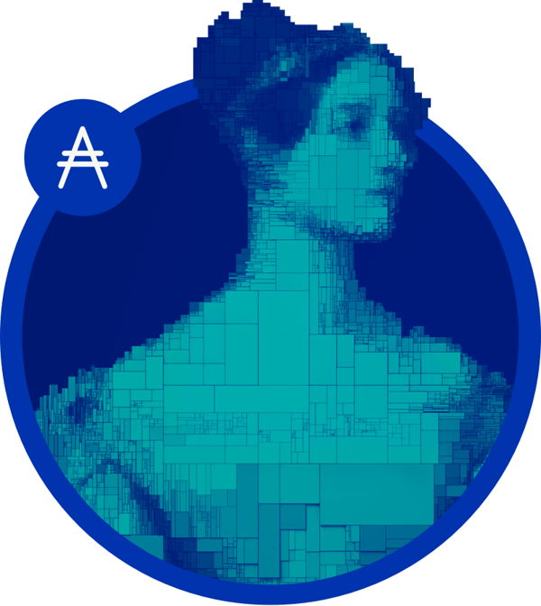

Ada Lovelace
The first programmer!

Here are some interesting facts about Ms.Lovelace's life:
- Augusta Ada King, Countess of Lovelace was born in December 1815.
- Ada Lovelace was the first computer programmer!!!
- The first person in the world that recognised the potential of machines beyond pure calculation. She published the first algorith inteded to be carried by such a machine.
- She was an English mathmatician and writer.
- There are some controvercies regarding her contributions such as Bruce Collier, who later wrote a biography of Babbage, wrote in his 1970 Harvard University PhD thesis that Lovelace "made a considerable contribution to publicizing the Analytical Engine, but there is no evidence that she advanced the design or theory of it in any way
- The digital token ADA was named after Ada Lovelace. 
If you want to learn more about the lovely Ada Lovelace you can visit her wikipedia page.